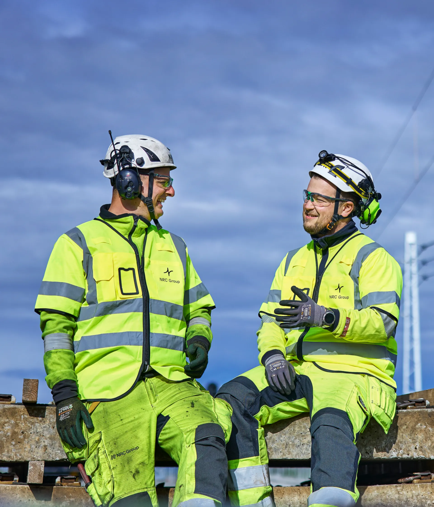
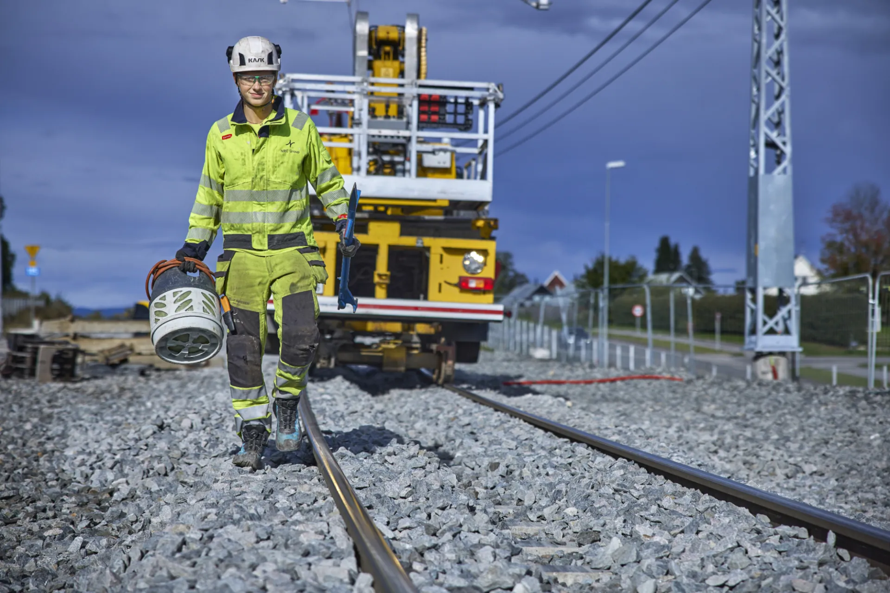
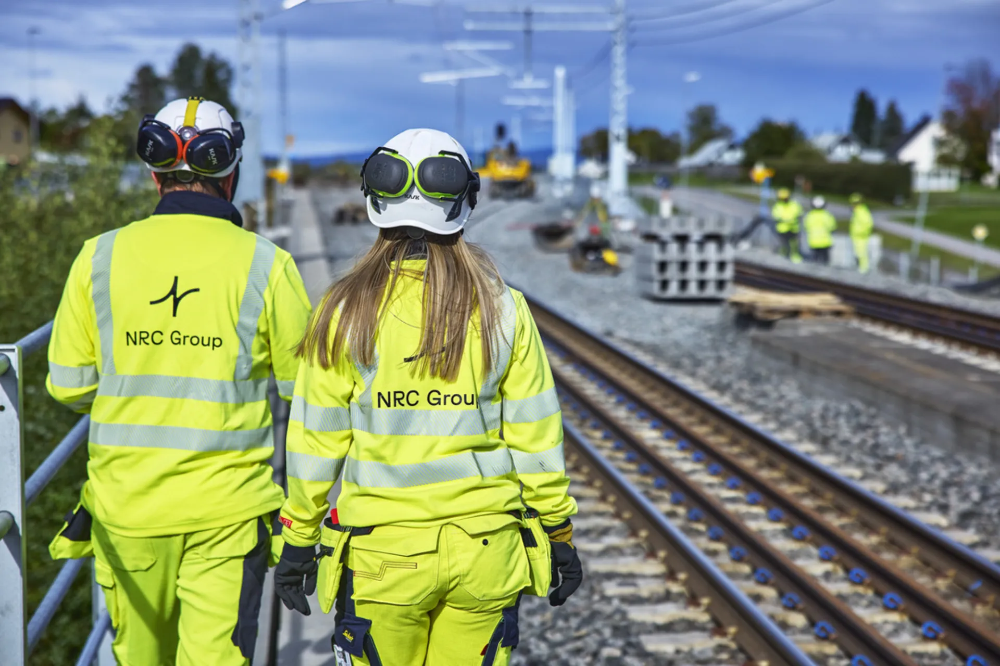

Bærekraft
Bærekraft
Om oss Tjenester Prosjekter Bærekraft Karriere Nyheter Kontakt Endre informasjonskapselinnstillinger Bærekraft Vi bygger for en bærekraftig framtid, på en bærekraftig måte. Integrert årsrapport 2025 I korte trekk Miljø HMS Styring Langsiktige løsninger NRC Group leverer infrastrukturløsninger med lang levetid og lave utslipp. Måten vi gjør det på er viktig for oss – og for våre omgivelser.
Vi har forpliktet oss til klimamålene i Parisavtalen og jobber kontinuerlig med å redusere våre utslipp. Vår ambisjon er å oppnå netto nullutslipp innen 2050. I tillegg har vi satt et mål om å redusere våre klimagassutslipp med minst 10 % per år. Vi har også definert et mål om en årlig sorterings- og gjenvinningsgrad på minimum 80%, samtidig som vi viderefører våre nullavfallsambisjoner på sikt.
Vi jobber hele tiden med å redusere utslippene våre, sortere og gjenbruke materialer. Mange av våre tiltak er like praktiske som de er effektive, som å investere betydelig i lastebiler som kjører på biogass og redusere tiden maskinene våre går på tomgang. Identifisering av de mest vesentlige temaene, er nøkkelen til å innføre de riktige tiltakene. Vi har iverksatt en rekke tiltak for å hindre belastninger på miljøet, men også tiltak for å løse sosiale og etiske utfordringer. Helse og sikkerhet for våre ansatte er vår prioritet nummer én, men for å nå alle våre bærekraftsmål, må vi også lykkes med å oppfylle våre sosiale ambisjoner, våre miljømål og våre krav til etisk forretningsdrift.
Vi ønsker å være transparente og åpne om hva vi gjør og hvilke resultater vi oppnår. På disse sidene kan du lære mer om hvordan vi jobber med bærekraft i NRC Group Norge. Det gjelder miljø, helse, sikkerhet og sosialt ansvar. Du kan også lese om hvordan vi bidrar til FNs bærekraftsmål. For en dypere forståelse av hvordan vi jobber med bærekraft og våre resultater, kan du se i vår årlige integrerte årsrapport.



Kort fortalt: hva trenger du?
Beskriv saken, så svarer vi med hva det krever og hva det koster.